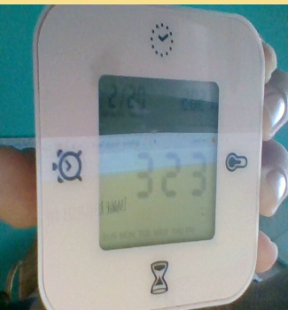
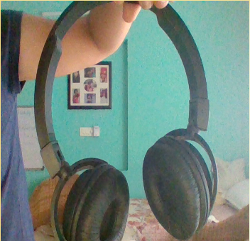
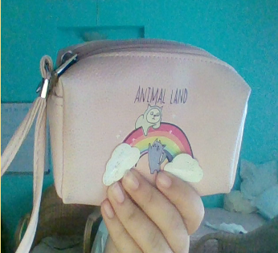
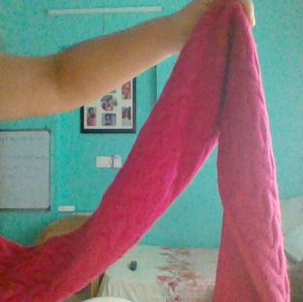

Wolfram Mobilenet
This is a case study on Wolfram and Mobilenet programs.
Both of these networks have been compared using their result quality.
| Image | Wolfram | MobileNet |
|---|---|---|
 |
Person | Lotion |
 |
Book | Packet |
|  | Indoor | Digital Clock |
|  | Mechanical fan | Microphone, Mike |
|  | Indoor | Purse |
|  | Child Art | Velvet |
From this casestudy we have learnt that MobileNet is better platform.
It's results are comparitively more accurate than Wolfram's.